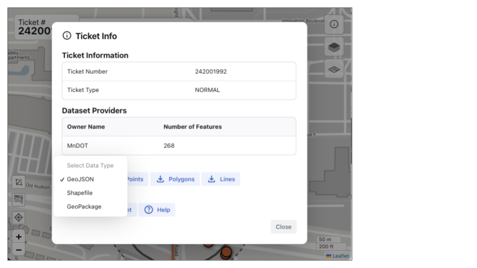
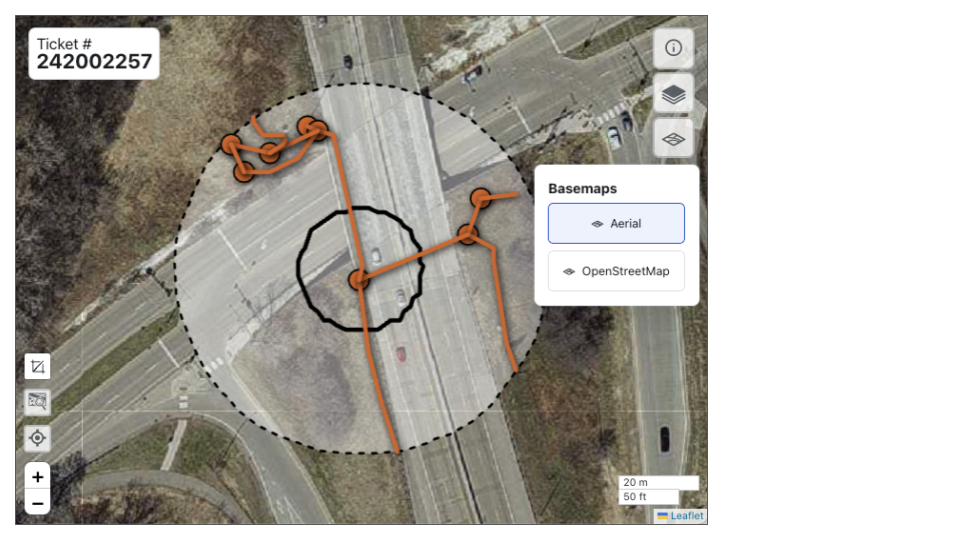
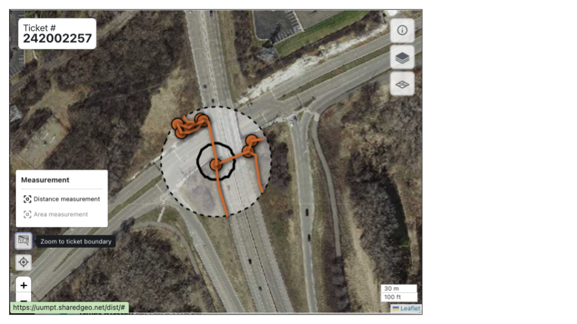
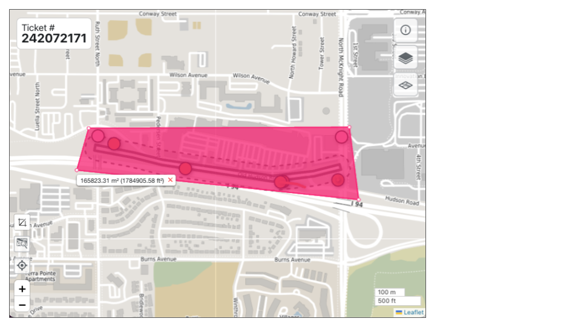

Using Ticket Viewer
The Ticket Viewer displays the polygon for the ticket area as a solid line (1), surrounded by a 100 foot buffer, shown as a dotted line (2).

FuzionView Ticket Viewer
Hint
Zoom in to see more features.
Identify Facility Infrastructure
Select a feature dot or line to display the feature information available, including the date and time last updated. If a feature exists nearby or on top of another feature, those feature IDs will be listed at the bottom as Nearby Features. Click a Feature ID to toggle from one stacked feature to another.

Identifying Infrastructure
For definitions for each item, check out the Glossary
Stacked Features
Underground utilities are often found above or below other utilities. When you select a feature, if there are other features hidden by the selected feature, those features are listed at the bottom. Simply click through the links provided to see the complete picture of the features at that specific location.
Ticket Info
Click the Information icon at the top right to see additional ticket info.

FuzionView Ticket Viewer
- The Ticket Info view has the following tools and information:
Ticket Information - Ticket Number and Type.
Data Set Providers - the owners who provided the information and the count of features they manage.
Options for Downloading the ticket map information. See the section below on Downloads
Links to the GSOC Ticket and Help. See the section below on the GSOC Ticket
Downloads
- From the Ticket Info window you can select from several Download Options:
The default File Type is GeoJSON. Click the arrow to select a Shapefile or GeoPackage.
Select one of the other options to open Points, Polygons, or Lines data in a new window.

FuzionView Download Options
The GSOC Ticket
You can open the original GSOC ticket from Ticket Info by clicking View GSOC Ticket. This is the original ticket in your 811 ticketing system. For more information about GSOC, check out the documentation here

Gopher State One Call (GSOC)
Ticket Layers
From the Ticket Viewer, select the Layers icon at the top right to see available features in each layer.

Ticket Layers Options
- You can customize your view of a ticket by toggling a layer on or off. All layers are shown by default. Click any layer to hide it. Click again to display it once more.
Layers with no features will display grayed out.
Basemaps
From the Ticket Viewer, select the Basemaps icon at the top right to see available map options. * Select Aerial to replace the default OpenStreetMap.

Display Aerial Map
Navigation
- Use the Navigation Options at the bottom left and right to:
Measure distance or area See below for more information on using the Measure Tool.
Fit the screen to the ticket boundaries to the current window.
Zoom to your current location when GPS location is enabled.
Zoom in (+) and out (-) on the ticket boundaries.
The Scale displays the size of the ticket boundary in meters and feet.

Ticket Viewer Navigation Options
Measure Tool
To measure Distance, click the Measuring Tool icon and select the distance option.

Ticket Viewer Measurement Tools
Your cursor will become a cross. Click anywhere to create the starting point for the measurement. Click again on the end of the space where you want to measure the distance. You can continue to create distance measurements from the original starting point or double click on the last end point to stop measuring. To clear the measurements and start over, use the refresh button.
Distance Measurement Example
To measure Area click the Measuring Tool and select the Area option. Your cursor will once again be changed to a cross. Click at the starting point, then click again at one boundary of the area to be measured. Click again to create a three sided area. Click again to create a four sided area. You can use multiple, small sides to create more circular areas.

Area Measurement Example